When you’re beginning your journey into data analytics, you need to learn about accessing and manipulating data stored in databases. Relational databases that store tabular data in rows and columns remain a powerful and convenient way to manage data. Structured Query Language (SQL) is a standard programming language used to retrieve and manipulate data in databases.
By the end of this article, you’ll have a better understanding of what SQL is, how to use SQL, and where to learn more about it.
You can use this clickable menu to skip ahead to any section.
Ready to learn more about how to use SQL? Let’s get started!
1. What is SQL?
Structured Query Language, or SQL, is a standard programming language with its foundations in relational algebra that enables users to access and manage data in a database. It is a 4th generation programming language that is fairly human-readable, closely matching human language compared to programming languages like Java or C++. Because of its readability, SQL is easy to learn and use, which has kept it relevant in the field of data analytics for over 40 years.
To use SQL, we often rely on Relational Database Management Systems (RDBMS) that enable the creation of relational databases. Databases inside an RDBMS store data in objects called tables utilizing a tabular format, storing records by columns and rows similar to what you see when using a spreadsheet. Columns are referred to as fields, and rows are referred to as records.
By 1987, SQL had become a standard of both the American National Standards Institute (ANSI), and the International Organization for Standardization (ISO). Although it is a standard, there are different varieties of SQL developed by different companies like Microsoft and Oracle:
- SQLite
- MySQL
- PostgreSQL
- Microsoft SQL Server and SQL Server Management Studio
- Oracle
- Google BigQuery
Because SQL is a standard, each brand of SQL supports the core commands and syntax used to select and filter data, and insert, update and delete records. Each brand has slight differences in functionality, so refer to the documentation for whichever brand you’re using if you encounter errors, or are attempting to use advanced features.
2. What does SQL do?
SQL is not like a typical programming language (like Javascript, for example) that relies on constructs like iteration and recursion. We don’t need to tell SQL how to process data in the database—we simply give SQL server commands to perform a task (like selecting records) and the Query Engine under the hood generates an execution plan that it uses for efficient operation.
Selecting data and working with rows, columns, and tables is only the tip of the SQL iceberg! Most brands of SQL support functionality for aggregating data, indexing, creating user-defined functions and stored procedures, looping, using logical operators and variables, and managing user security.
Going beyond the operations performed using SQL, server and query performance tuning is both an art and science that could fill volumes of text on its own. In this tutorial, we’ll first explore the SQL basics and cover the following SQL commands:
- Creating a database
- Creating tables
- Inserting records
- Selecting records
- Filtering records
- Updating records
- Modifying tables
3. How to use SQL (for beginners)
After picking the band of SQL you want to use (for these examples, we will be using Microsoft SQL Server), start by downloading and installing the necessary software. Every command we use should work across all brands of SQL, but if you want to follow along using Microsoft SQL Server and SQL Server Management Studio (SSMS) you can download and install Microsoft SQL Server Developer version on either Windows or Linux.
After installing and setting up SQL Server, download and install SQL Server Management Studios. SSMS gives us a graphic user interface to interact with SQL Server.
With SSMS installed, launch the application and it will ask you to connect to the SQL Server you just set up:

If the server name is not populated automatically, select the Browse More option from the Server Name list and you should see your local SQL Server install available to select.
Once connected to SQL Server through SSMS, it will open and look like this:
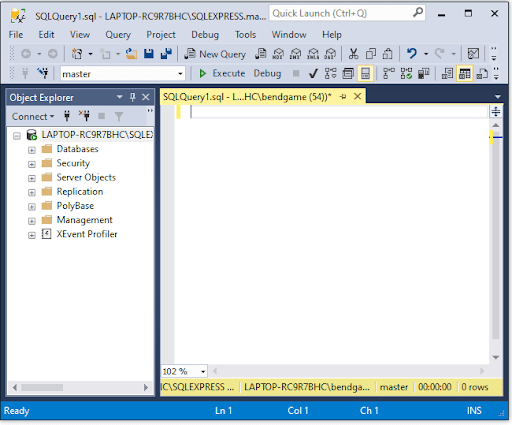
The Object Explorer panel visualizes different components, or objects, of the database server.
The Query Editor panel lets you type SQL code that can be executed against the selected database. We’ll cover more of the layout of SSMS in more detail after creating our first database.
How to use SQL: Creating a database
In order to learn and practice SQL skills, we need a database to store our tables and data. Creating a new database is simple and can be done one of two ways:
- Right click the Databases folder and select New Database. Then follow the prompts.
- Use the CREATE DATABASE SQL command.
We will use the SQL command to create the new database. In the Query Editor panel, type the following SQL command:
CREATE DATABASE exampleDatabase
Click the Execute button (or F5 on the keyboard).
The SQL statement will run and the Messages panel will appear confirming the command completed successfully.
Expand the Databases folder in the Object Explorer panel and you should see the exampleDatabase database (right click the folder and select Refresh if you do not see the database automatically) :
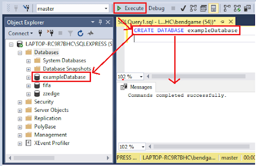
Right click on the exampleDatabase object and select New Query. A new Query Editor tab will appear and the exampleDatabase object will be selected in the dropdown list next to the Execute button. This dropdown list contains the names of the databases on which you can run SQL statements.
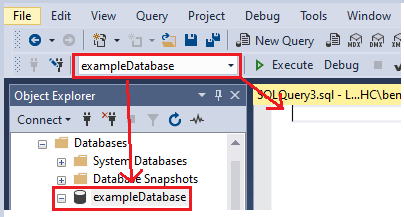
How to use SQL: Creating a table
In SSMS, we can use the CREATE TABLE command to create a new table in our database.
Before creating the table, we need to think about what data we want to store. Let’s imagine we run a business that deals with clients, and we want to store data about them. We will start by creating a table named client that will store records about our clients. What information might we want to store in the table’s fields? Name? Gender? Years of service?
When creating tables, we need to define the fields inside the table and their data types. Every column, local variable, parameter or expression used in SQL server needs a data type. There are several different data types, but for now let’s focus on using these three:
VARCHAR: The VARCHAR(n) data type stores characters and strings of text where n is the maximum number of characters the field can store. If you want to set it to max, use VARCHAR(max).
INT: The INT data type stores exact numbers, like 1, 3, 7… etc. It does not store numbers that contain decimals.
FLOAT: The FLOAT data type stores floating decimal point numbers. Due to the way computers work, floating point numbers are approximate which means not all values in the range of possible values can be expressed.
Use the CREATE TABLE SQL command to create the clients table and define the fields with their data types:
CREATE TABLE client ( clientID int not null , firstName varchar(50) , lastName varchar(50) , gender varchar(1) , yearsServiced int , discountRate float )
Notice we include an integer field named clientID and include the key words not null. We consider clientID an primary key field, so we want to make sure it is populated for each record in the table. Using a primary key field allows us to set up relationships without duplicating fields in other tables. This concept is called normalization and is an important part of data architecture in relational databases. We’ll explore normalization more in later examples.
After creating the client table, expand the tables folder to see the client table in the database. Expand the client table to see the fields we created:
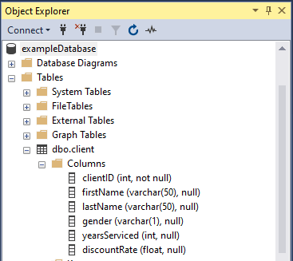
Notice the column name and data type are represented in the object explorer, which is helpful when dealing with many tables and lots of fields. Now that we have a table, it’s time to insert some data.
How to use SQL: Inserting records into a table
The SQL command to insert records into a table is INSERT INTO followed by the table name and the columns receiving data. The syntax looks like this:
INSERT INTO <table_name> (col 1, col 2, col 3…)
Values (val1, val2, va3…)
As a shortcut, if you’re inserting values for all columns in a table, the column names do not need to be specified.
Let’s make up some fake data to insert into the client table:
INSERT INTO client (clientID, firstName, lastName, gender, yearsServiced, discountRate)
values (1, 'Eric', 'Klep', 'M', 2, 0.03)Notice we put our varchar values in between quotes (‘’) to indicate the beginning and end of the string of characters. The values for data types int and float do not need the single quote.
Execute the SQL statement and notice the messages returned say 1 row affected, indicating the row was inserted successfully. Let’s add a few more records using the same method, but without specifying the column names since we’re inserting data into each field:
INSERT INTO client
values (2, 'Kristen', 'Moss', 'F', 1, 0.01)
INSERT INTO client
values (3, 'Johnny', 'Carson', 'm', 4, 0.05)
INSERT INTO client
values (3, 'Alex', 'Porter', null, 4, 0.05)Now that we have records in our table, it’s time to query the database to retrieve our data.
How to use SQL: Selecting data
The SQL command to retrieve data from a database is SELECT. The returned data is stored in a virtual results table called the results-set.
If we want to see all of the records in our client table, instead of including every column in our SELECT statement, we use the * wildcard. The following SELECT statement returns all columns and all rows from the client table:
SELECT * FROM client
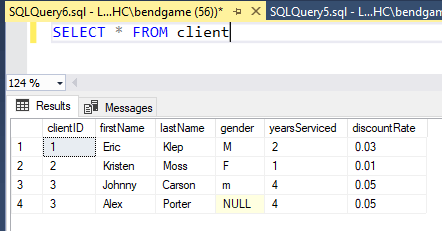
As expected, all fields return and we can see the four records we inserted into the client table.
We can specify the fields we want to include in the output by adding them to the select statement instead of using *. For example, if we want to return only the clientID and firstName fields, we’d use this query:
SELECT clientID, firstName FROM client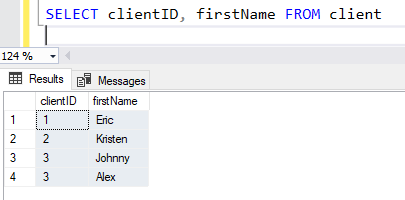
We can also select distinct records by adding the DISTINCT keyword after SELECT in our statement. Doing so returns the unique value, excluding duplicates. For example, since our clientID field contains two records with a value of 3, using SELECT DISTINCT will return three results instead of four:
SELECT DISTINCT clientID FROM client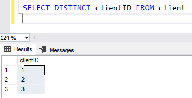
If we were to include the firstName column in our SELECT DISTINCT statement, we’d still get four records because the combination of clientID and firstName would all be unique since the combination of the two fields is not duplicated in the table. Give it a try:
SELECT DISTINCT clientID, firstName FROM clientWhen dealing with large datasets, or looking for particular records, we need to filter the data. Now that we know how to select records, let’s explore filtering them.
How to use SQL: Filtering results
Using the WHERE clause in our SELECT statement, we can filter for specific values we want, or do not want, to return. It allows us to return records that meet a given condition. The WHERE clause can be used with UPDATE and DELETE statements as well.
Let’s say we only want to return records from our client table that have a clientID equal to 3. We’d add a WHERE clause at the end of our select statement that says WHERE clientID = 3:
SELECT * FROM client WHERE clientID = 3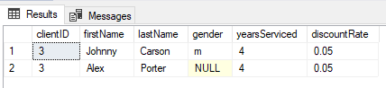
As expected, we get two results since two records have clientID 3.
There are more operators we can use in addition to = in a WHERE clause:
- >
- >=
- <
- <=
- !=
- AND
- OR
- IN ()
- ISNULL()
For example, if we wanted to find records that have Eric as a first name or more than 3 years serviced, we could use our logical OR:
SELECT * FROM client WHERE firstName = 'Eric' OR yearsServiced > 3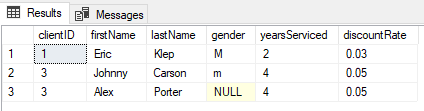
Notice we don’t get our record for clientID 2 because it meets neither condition specified in our WHERE clause. Since we used OR, results are returned if either of the conditions are true. If we would have used AND instead of OR, we would get 0 results returned since there are no records where the firstName is Eric and yearsServiced is greater than 3.
What is a primary key in a SQL table?
When looking at the results from our SELECT statements, we can see a problem. Notice that the clientID for client Alex Porter is identical to the clientID for Johnny Carson. We want the clientID value to be unique per row so we can use the clientID as a primary key and foreign key when creating relationships with other tables in our database.
A primary key is what’s called a table constraint, and it must contain unique values. A table can have only one primary key. The primary key value cannot be null.
Before we can alter our table to add a primary key constraint on the clientID field, we need to fix the duplicate clientID value. To fix the value, we use an UPDATE statement. Then we can use an ALTER TABLE command to add the primary key constraint to the table.
How to use SQL: Updating records
Use the UPDATE statement to modify records in a table. To update records, you must use the SET keyword to change the old value to the new value. When updating records, make sure to use the WHERE clause to specify which records should be updated or else all records will be updated.
Let’s set the clientID to 4 for Alex Porter’s record:
UPDATE client SET clientID = 4 WHERE firstName = ‘Alex’ AND clientID = 3
Executing the UPDATE statement should return a message that says 1 row affected. Run a SELECT * statement to confirm the record is updated.
SELECT * FROM client
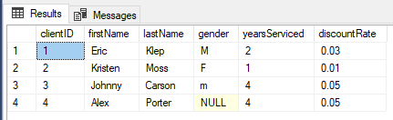
We successfully updated the record and can now add a primary key constraint to the client table on the clientID field.
ALTER TABLE client
ADD PRIMARY KEY (clientID)After executing the ALTER TABLE statement, you will see a message that says “Commands completed successfully.” To test the new table constraint, try updating Alex’s clientID back to 3 instead of 4. You should receive an error message.
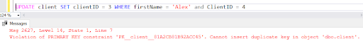
How to use SQL: takeaways for beginner SQL concepts
We just covered a ton of SQL concepts, so let’s review what we’ve learned before moving to the next section and learning more advanced SQL commands:
- CREATE DATABASE is used to create a new database in the SQL server.
- CREATE TABLE is used to create new tables in a database.
- Data types must be defined for each field in a table.
- Good database design is centered around the concept called normalization.
- Tables often have primary keys which must be unique per record.
- Tables can be altered.
- INSERT INTO is the SQL command to insert new records into a table.
- UPDATE is used to update records in a table.
- SELECT statements are used to query data and retrieve records from tables.
- WHERE is used to filter records based on specific conditions.
4. Next steps
SQL is a great skill to have if you want to work with data. By following the examples in this guide, you’ve laid a foundation for continuing to learn more about how to use SQL and how to use it for data analytics. Having been around for over 40 years, SQL is a very deep topic, and this beginner’s guide only scratches the surface.
If you’re set up with Microsoft SQL Server, I recommend reviewing their documentation since it is filled with fantastic examples for every SQL topic. You can find datasets online from websites like Kaggle.com and import them into SQL server. Beyond official documentation, people have written text books or created online courses explaining how to performance tune SQL queries, or set up proper data architecture, or create efficient indexes on tables, and so on. You may also be interested in the next tutorial for advanced SQL.
Even though there is a lot to learn, there are thousands of online guides or books covering everything you want to know about SQL. You could also make great use of gaining a SQL certification. Stay patient, practice by loading data into your server, and you’ll become a SQL master in no time.